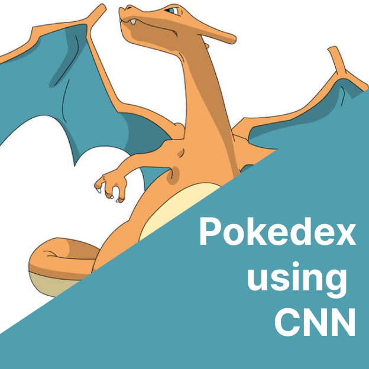
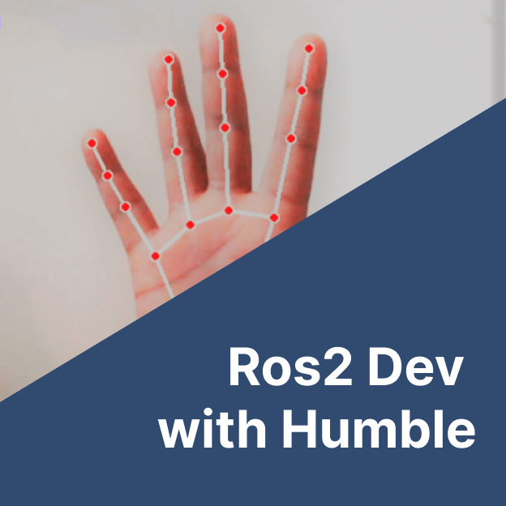
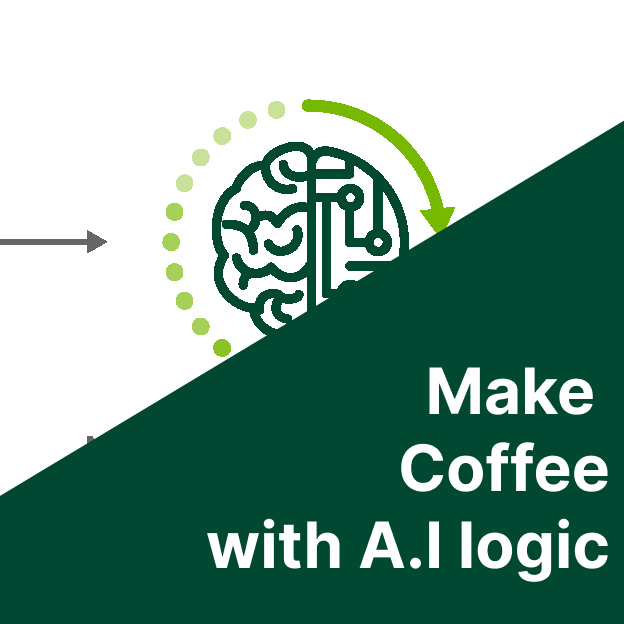

Most of my my machine learning knowledge is from software Dev certifcation, a formal showcase of my formal eduction and self taught journey of innovation and data-driven insights. discovering the power of algorithms to unlock hidden patterns and drive intelligent decision-making.

Pokedex using CNN
Classifying pokemon images to be fire, water or grass.

Number Classifier MLP
Classifiing handwritten numbers from 0-9 using MLP.

Ros2 Dev
Controlling (speech, vision an hearing) based on hand gesture.

Make Coffee with A.I logic
Using prolog to write an algorithm for creating coffee in Prolog.